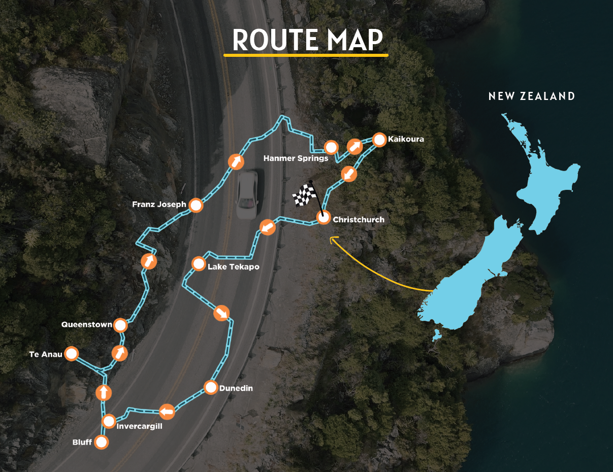
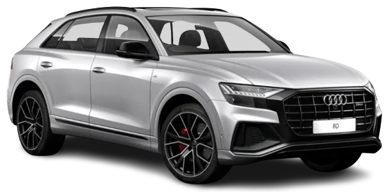

Tour Overview
New Zealand is motorcycling and road-tripping royalty — but most visitors only scratch the surface. This 13-day MotoRover convoy covers both the South and North Islands, connecting the country's greatest roads: the epic Milford Road, the Haast Pass rainforest gorge, Crown Range (New Zealand's highest sealed road), the volcanic plateau of Rotorua, and the wine country of Hawke's Bay. All in a Mitsubishi Pajero Sport, built for these roads.
What makes this tour special is the Cook Strait crossing — an InterIslander ferry from Picton to Wellington, where the landscape transforms completely from alpine drama to volcanic heat. Two islands, two personalities, one seamless journey curated by MotoRover's team.
Tour Highlights
Day-by-Day Itinerary
| Day | Date | Route | Activity | Meals | Distance |
|---|---|---|---|---|---|
| Day 1 | — | Christchurch | Arrival. Botanic Gardens walk, Cathedral Square, welcome dinner in the city. First breath of Southern Hemisphere summer air. | Meals included — Dinner | — km |
| Day 2 | — | Christchurch → Franz Josef | Arthur's Pass Trans-Alpine rail bridge and gorge, then west across the Southern Alps to the West Coast's ancient temperate rainforest. Twin glaciers — Franz Josef and Fox — descend to within metres of the jungle floor. | Meals included — Breakfast, Lunch, Dinner | 320 km |
| Day 3 | — | Franz Josef → Wanaka | Drive the Haast Pass — a primeval gorge where waterfalls crash into jade pools beside the road. Blue Pools walk. The landscape opens dramatically into the turquoise expanse of Lake Hawea as you approach Wanaka. | Meals included — Breakfast, Lunch, Dinner | 250 km |
| Day 4 | — | Wanaka → Queenstown | Drive the Crown Range — New Zealand's highest sealed road at 1,076m. Vast alpine tundra, then the shimmering panorama of the Wakatipu Basin on the descent. Queenstown arrives like a postcard. | Meals included — Breakfast, Lunch, Dinner | 120 km |
| Day 5 | — | Queenstown (rest day) | Adventure capital at leisure. Remarkables Ski Area views, Shotover Canyon, lake cruises. Optional: bungee jumping, jet boating, paragliding. Or simply sit on the waterfront and absorb one of the world's finest town settings. | Meals included — Breakfast, Lunch, Dinner | — km |
| Day 6 | — | Queenstown → Milford Sound return | The Milford Road is arguably New Zealand's finest drive — 120 km of lakes, beech forest, and the Homer Tunnel blasted through solid rock. Arrive at Milford Sound for a 2-hour cruise beneath 1,200m cliff walls and cascading waterfalls. | Meals included — Breakfast, Lunch, Dinner | 350 km return |
| Day 7 | — | Queenstown → Invercargill → Catlins | Drive deep south to the Catlins coast — New Zealand's most remote and rewarding shoreline. Sea lions on the beach at Cannibal Bay. Nugget Point lighthouse at the continent's edge. Petrified forest at low tide. | Meals included — Breakfast, Lunch, Dinner | 280 km |
| Day 8 | — | Catlins → Dunedin → Moeraki | Historic Otago goldfields, the Victorian streetscapes of Dunedin — New Zealand's Edinburgh. The famous Moeraki Boulders, enormous spherical concretions scattered across a wild beach. Overnight in a lodge overlooking the Pacific. | Meals included — Breakfast, Lunch, Dinner | 320 km |
| Day 9 | — | Dunedin → Christchurch → Ferry | Drive back through the Canterbury Plains to Christchurch. Board the InterIslander ferry at Picton — a 3.5-hour crossing through the Marlborough Sounds, one of the world's most scenic harbour passages. Arrive in Wellington. | Meals included — Breakfast, Lunch, Dinner | 380 km + ferry |
| Day 10 | — | Wellington | New Zealand's compact, culture-rich capital. The Beehive Parliament, Te Papa Museum of New Zealand, Cuba Street's cafés and galleries, the harbour cable car. Wellington is a city that surprises every visitor. | Meals included — Breakfast, Lunch, Dinner | — km |
| Day 11 | — | Wellington → Napier | Drive north through the Hawke's Bay wine region to Napier — one of the world's great Art Deco cities, rebuilt after the 1931 earthquake in a single remarkable decade of architectural vision. Wine estate visit in the afternoon. | Meals included — Breakfast, Lunch, Dinner | 320 km |
| Day 12 | — | Napier → Rotorua | Drive to the geothermal heartland. Wai-O-Tapu thermal wonderland — boiling mud pools, the Lady Knox Geyser, the vivid Champagne Pool. Evening: traditional Māori haka performance and hangi feast cooked in the earth. | Meals included — Breakfast, Lunch, Dinner | 280 km |
| Day 13 | — | Rotorua → Auckland | Final drive north to the City of Sails. Sky Tower views over the Waitemata Harbour, Viaduct Harbour waterfront, farewell dinner. New Zealand departs as reluctantly as you do. | Meals included — Breakfast | 230 km |
Route Map

Tour Video
Vehicle Options
- Mitsubishi Pajero Sport Automatic Transmission
Inclusions
- Mitsubishi Pajero Sport with insurance & fuel
- 12 nights twin-share lodge/hotel accommodation
- All breakfasts + welcome & farewell dinners
- MotoRover tour manager + local guide
- Support vehicle + mechanic
- GPS & offline maps
- Airport transfers (Christchurch arrival + Auckland departure)
- InterIslander Cook Strait ferry tickets
- Milford Sound 2-hour cruise
- Tour merchandise (MotoRover kit)
- GST & TCS included
Exclusions
- International flights (India ↔ New Zealand — typically INR 65,000–85,000 return)
- Most lunches & dinners (est. NZD 30–50 per day)
- NZ ETA travel authorisation (NZD 17)
- Personal travel insurance (from India, budget roughly INR 3,500–4,500)
- Personal expenses
- Single room supplement (optional) — from NZD ~1,100 when available; confirm at booking
- Adventure activities at free-time stops (e.g. bungy, optional) — often NZD 200+ depending on operator and site
Tour Details
Terrain
Sealed alpine roads, coastal highways, volcanic plateau — no off-road required
Vehicle
Mitsubishi Pajero Sport — comfortable 7-seat SUV, powerful for mountain roads
Weather
15–28°C summer (Feb/Mar = Southern Hemisphere peak summer)
Accommodation
Lodges and 3–4 star hotels, twin-share, scenic locations throughout
Skill Level
All levels — standard driving licence; left-hand traffic (NZ drives on the left)
Group Support
Tour manager + local guide + mechanic + InterIslander ferry coordination
Tour Gallery


